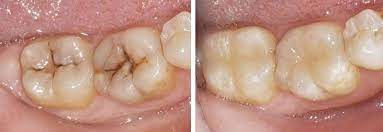
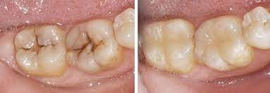

El Dr. Jeury Victoriano, nacido el 25 de mayo de 1993, es un profesional de la odontología
con base en Jarabacoa. Inició su formación en la Universidad Católica del Cibao (UCATECI),
culmino sus estudios 2016, donde se graduó en odontología.
Durante sus años de estudio, Jeury se dedicó a adquirir los conocimientos y habilidades
necesarios para ejercer la odontología de manera competente. Tras completar su formación,
comenzó a ejercer su profesión, en la clinica odontologica plaza dental
brindando atención dental a la comunidad.
Desde entonces, ha trabajado en ofrecer servicios odontológicos de calidad,
centrándose en las necesidades de sus pacientes. Su enfoque se basa en brindar
un cuidado compasivo y efectivo, con el objetivo de mejorar la salud bucal de quienes
lo consultan.
Con una sólida formación académica y un enfoque centrado en el paciente, el Dr. Jeury
Victoriano continúa desempeñando un papel importante en el campo de la odontología en
Jarabacoa y en la región circundante.


 
